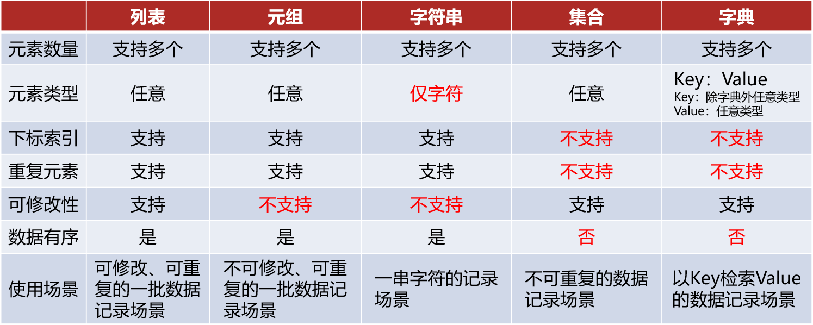

02_Python数据容器
1 列表(list)
1.1 列表的创建与访问
列表类似C++的数组，不过列表中的数据可以为不同的数据类型，并且可以嵌套，嵌套时类似C++的多维数组。
列表定义用[]包围，以,分割，正向下标从0开始，有反向索引，从-1开始，从后往前，依次递减。
1 | |
列表可以使用+拼接或使用*实现重复计算。
1 | |
1.2 列表生成式
列表生成式的效率很高，强烈建议使用列表生成式来创建列表。
1 | |
推导式可以用来生成列表、集合、字典。
1 | |
1.3 列表的遍历
1 | |
1.4 常用方法

2 元组(tuple)
2.1 元组的创建与访问
元组与列表类似，不同之处在于元组的元素不能修改，元组使用()，列表使用[]。
1
2
3
4
5
6
7
8
9
10tp = () # 空元组
nums = (1, 4, 6)
# 元组内只有一个元素时，需要有逗号在内，否则小括号会识别为运算符
nums = (1,) √
nums = (1) ×
# 元组的访问和列表完全一样，通过下标访问，支持反向下标
nums[1]
2.2 元组的“可变”
元组内有list的时候，元组依然遵循元素不可变，但list内的元素可以修改。这是因为元组存储的时候本质上存的是list的地址，只要地址不变，元组元素就没有修改，而所指内容是否变化和元组无关。正因为如此，替换为别的list也是不被允许的，因为地址发生了改变。
1
2nums = (1, 2, [1, 2, 3])
nums = (1, 2, 地址)

2.3 打包和解包
当我们把多个用逗号分隔的值赋给一个变量时，多个值会打包成一个元组类型；当我们把一个元组赋值给多个变量时，元组会解包成多个值然后分别赋给对应的变量。
1
2
3
4
5
6
7# 打包操作
a = 1, 10, 100
print(type(a)) # <class 'tuple'>
# 解包操作
i, j, k = a
print(i, j, k) # 1 10 100
解包操作对所有序列的成立，包括列表、元组、字符串、
range都可以使用解包操作。
解包时元素个数和变量个数不匹配会引发ValueError异常，不过我们可以使用星号表达式解决变量少于元素个数的情况，让一个变量接收多个值。
- 星号修饰的变量会变成一个列表，可以存放0个或多个元素
- 解包语法中，只能有一个型号表达式
1 | |
a, b = b, a和a, b, c = b, c, a实际并没有用到打包解包语法，而是有特定的字节码指令实现这两个操作，效率非常高，在三个以上的变量交换时需要使用打包解包。
2.4 常用方法

3 字符串(str)
3.1 字符串的创建和访问
字符串同列表、元组一样，可以通过下标和反向下标进行访问。不过和C++非常不同的一点是，字符串是无法修改的容器。也就是说如果要完成修改操作，只能得到一个新的字符串，旧的字符串是无法修改的。
1
2
3
4
5
6
7
8
9
10
11
12
13
14
15
16# 字符串可以使用单引号、双引号、三引号进行定义，使用三引号时可以跨行。
s = "" # 空字符串
s = 'hhh'
s = "hhh"
s = """hhh
hhhh
hh
"""
# 单引号里面可以包双引号，双引号里面可以包单引号
s = "人工'智'能"
s = '人工"智"能'
print(s[1])
- 字符串内部使用
\进行转义，比如\n换行、\t缩进，又或者转义\ ' "这些特殊字符 - Python中以
r或R开头的字符串叫做原始字符串，字符串内都是本来的含义，没有所谓转义字符1
2
3# 很多字符需要转义需要很多\，可以使用r''或R''表示内部字符串默认不转义
print('\\\t\\') # \ \
print(r'\\\t\\') # \\\t\\
3.2 字符串的运算
- 字符串比较时按照字典序从前往后，只要其中一位大，后面就不用比较了
- 可以使用
+进行拼接，还可以使用*将字符串重复
3.3 字符串的格式化
两种方法变量的位置都可以填写表达式，Python会先计算再填入。
1
2
3
4
5
6
7
8
9
10# 方法一：使用占位符
"名字：%s" % name
"名字：%s 年龄：%d 分数：%.2f" % (name, age, score)
%md %mf 限制m位宽度（小数点也算一位）
%.nf 保留n位小数
%m.nf 限制m位宽度，并保留n位小数
# 想要打出 %，可以使用%%
print("%.2f%%" % 82.5)
1 | |
3.4 常用方法
由于字符串不可变，所以使用字符串的方法并不会改变原来的字符串，而是产生新的字符串。
1
2
3
4
5
6
7
8
9
10
11
12
13
14
15
16
17
18
19
20
21
22
23
24# 转大写
su = s.upper()
# 转小写
sl = s.lower()
# replace用法，生成新的字符串，原字符串不变
s = "Python好玩真好玩"
new_s = s.replace("好玩", "有趣")
print(s) # 结果还是 Python好玩真好玩
print(new_s) # 修改后的 Python有趣真有趣
# split用法，原字符串不变，生成一个新列表
name = "Python-Java-C++"
name_list = name.split('-')
print(name) # Python-Java-C++
print(name_list) # ['Python', 'Java', 'C++']
# strip用法，去除前后指定字符串
demo = " hhhh "
new1 = demo.strip() # 默认去除前后空格和换行符
demo = "1211哈哈哈21121"
new2 = demo.strip("12") # 按照单个字符，'1'和'2'都会删除
print(new2) # 哈哈哈

4 序列的切片
序列是指：内容连续、有序，可使用下标索引的一类数据容器。 上述的列表、元组、字符串都是序列。序列支持切片操作，切片就是从原序列中取出一个子序列。
语法：序列[起始下标:结束下标:步长]（类似range序列，[起始,结束)范围内指定步长）
表示从序列中，从指定位置开始，依次取出元素，到指定位置结束，得到一个新序列。
- 起始下标表示从何处开始，可以留空，留空视作从头开始
- 结束下标（不含）表示何处结束，可以留空，留空视作截取到结尾
- 步长表示依次取元素的间隔（可以为负，反向走，起始下标也要在结束下标右边）
注意，此操作不会影响序列本身，而是会得到一个新的序列（列表、元组、字符串）
5 字典(dict)
5.1 字典的创建和访问
字典使用{}包围，存储的元素是键值对key:value，并且key不可重复，重复会覆盖原有数据。
key数据类型必须为不可变类型，不可为字典、列表，一般类型用：字符串、整数value数据类型随意，不限制
1 | |
字典访问到不存在的key会报错，可以使用in或字典.get(键, 返回值)来检验。
1
2
3
4
5
6
7
8
9
10
11
12
13
14
15
16# 使用 in 检验
d = {'zhangsan': 18}
if 'zhangsan' in d: # 相反还有 not in
print('在字典')
# 使用 字典.get(键, 返回值) 方法
# 键存在则返回值，键不存在默认返回 None，也可以指定返回值
if d.get('lisi') is None: # d.get('lisi', 1) == 1 作用一样
print('不在字典')
# 可以用get()很方便地统计出现次数
s = input()
counter = {}
for c in s:
if c.isalpha():
counter[c] = counter.get(c, 0) + 1 # 存在返回已有值，不存在返回0
字典通过哈希算法计算
key的位置，所以字典的查找和插入操作极快。由于要保证hash的正确性，作为key的对象就不能变。在Python中，字符串和整数都不可变，可以放心用作key，list可变不能作为key。
5.2 字典的遍历
1 | |
5.3 常用方法

6 集合(set)
6.1 集合的创建
set和dict类似也是一组key的集合，但不存储value，由于key不能重复，所以在set中没有重复的key。集合内部是去重并且无序的，使用{}包围。因为无序，所以集合不可用下标进行访问。
1
2
3s = set() # 空集合，s = {} 不是空集合，而是空字典
s = {1, 2, 3}
set和dict底层原理一样，唯一的区别仅仅在于没有存储value，key是唯一的保证了set内部不会有重复元素，由于无法判断两个可变对象是否相等，所以不能存放可变对象。
注意与C++非常不同的是，集合不会自动排序，
dict和set的底层哈希表会让它看起来好像有顺序，但这不是排序，只是哈希存储的结果，顺序不稳定）
6.2 集合的运算
set之间有很方便的取交集&和取并集|运算。
1
2
3
4s1 = {1, 2, 3, 4}
s2 = {1, 2, 5, 6}
print(s1 & s2) # 交集 {1, 2}
print(s1 | s2) # 并集 {1, 2, 3, 4, 5, 6}
6.3 集合的遍历
由于集合不支持下标访问，所以不能使用while循环。
1
2for i in s:
print(i)
6.4 常用操作

7 容器对比
列表、元组字符串为序列类型，集合、字典为非序列类型。
- 是否支持下标索引
- 支持：列表、元组、字符串
- 不支持：集合、字典
- 是否支持重复元素：
- 支持：列表、元组、字符串
- 不支持：集合、字典
- 是否可以修改
- 支持：列表、集合、字典
- 不支持：元组、字符串

8 容器通用操作

sorted：接收任意可迭代对象（list、tuple、set、dict、str等），返回一个新的列表（不修改原对象）。.sort()：list专属方法，直接在原列表上排序，不会返回新列表（返回None）。
1 | |
sorted有类似C++中的cmp函数，可以自定义排序规则，并且支持lambda匿名函数，用法如下：
1
2
3
4
5
6
7
8
9
10
11
12
13
14
15
16# 默认以第一个元素作为依据进行排序
ls = [('bob', 70), ('alice', 80), ('carl', 100)]
ls = sorted(ls)
print(ls) # [('alice', 80), ('bob', 70), ('carl', 100)]
# x 是需要排序容器的一个元素，sorted 会把每个元素传入自定义函数
def cmp(x):
return x[1]
# 自定义排序规则
ls = sorted(ls, key=cmp)
print(ls) # [('bob', 70), ('alice', 80), ('carl', 100)]
# lambda函数＋逆序排列
ls = sorted(ls, reverse=True, key=lambda x: x[1])
print(ls) # [('carl', 100), ('alice', 80), ('bob', 70)]
enumerate(iterable, start=0)：iterable: 任何可迭代对象（列表、元组、集合、字典、字符串等）。start: 可选参数，指定索引计数的起始值。默认为 0。
1 | |